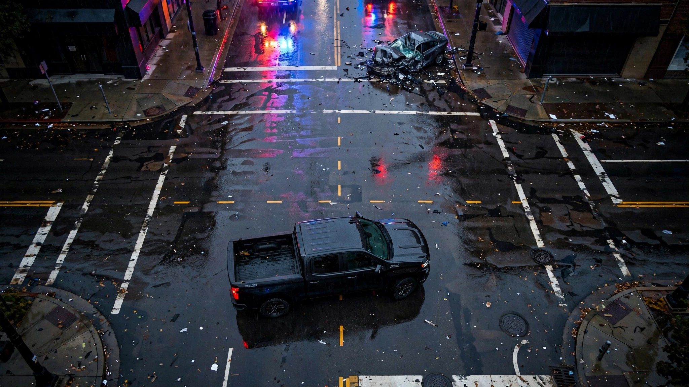

The Silverado Kills 100 Innocent People a Year. Its Drivers Aren't Even the Drunkest.

According to the toxicology reports, the Chevrolet Corvette's drivers are the most chemically adventurous in America. A full 26.2% of Corvette drivers in fatal crashes test positive for alcohol, drugs, or both.[1] That is the highest any-substance impairment rate among vehicles with 1,000-plus fatal crash drivers in the FARS database. Every other vehicle that comes close is a sedan or a compact with half the horsepower and none of the mystique.
And yet the Corvette barely registers as a threat to anyone except its own pilot. In FARS fatal crashes involving a Corvette, 88.4% of the deaths are the Corvette's own occupant. Only 11.6% are someone else. The car is a self-contained disaster, a $65,000 single-player game whose impaired drivers wrap themselves around telephone poles and leave pedestrians, minivan occupants, and cyclists entirely out of it.
Now compare that to the Chevrolet Silverado. The Silverado's impairment rate is 20.6%. Unremarkable. Dead average across all vehicles in FARS. But the Silverado weighs 4,500 to 5,600 pounds depending on trim, rides on a full-size body-on-frame chassis, and sits high enough to override the door sills of most sedans. When it hits something, the mass differential does the rest.
FARS records 19,732 fatal crashes involving a Silverado between 2014 and 2023, resulting in 9,591 Silverado occupant deaths. That gap of 10,141 represents fatal crashes where someone other than the Silverado's occupant died. Pedestrians. Sedan drivers. Motorcyclists. Passengers in whatever the Silverado hit. Multiply that 51.4% other-party kill ratio by the 20.6% impairment rate and you get an estimate of how many of those deaths involved a Silverado driver who was drunk, high, or both: roughly 1,015 over a decade.[1] Call it 100 innocent people a year, killed by impaired drivers of a single vehicle model. Not a brand. Not a class. One truck.
I built what I'm calling the Drunk Aggressor Index to quantify this. It multiplies a vehicle's substance-impairment rate by the percentage of its fatal crashes that kill someone other than its own occupant. The Silverado scores 10.6. The Ram 1500 scores 13.4 but on a smaller sample. The Dodge RAM (pre-rebrand) at 10.8 accounts for another 475 estimated drunk other-party deaths. The F-150 generates the largest absolute number of other-party fatal crashes in FARS but its slightly lower impairment rate and proportionally higher occupant death count pull it just below.
But the real story is the class pattern, not any single nameplate. Every vehicle in the top ten of the Drunk Aggressor Index is either a full-size pickup or a large SUV. The bottom ten are sedans and compacts: Cavalier, Neon, Cobalt, Spark. The cheapest, smallest, most structurally vulnerable cars on the road. When their impaired drivers crash, they kill themselves. When a pickup's impaired driver crashes, the physics distributes the consequences outward.[2]
This is not a moral argument about pickup drivers. Their impairment rates are boringly average. The Silverado at 20.6%, the F-150 at 19.3%, the Sierra at 21.0%: these cluster within two percentage points of the national FARS mean. Pickup drivers are not meaningfully more or less likely to drive drunk than anyone else. They are, however, driving vehicles that weigh twice what a Civic weighs, and when impaired judgment meets a 5,500-pound kinetic energy reservoir, the damage goes outward.
IIHS has documented this asymmetry for decades. A 1,000-pound weight increase in the striking vehicle raises the struck vehicle's fatality risk by 47%.[2] That is the physics. What I am adding is the toxicology. When you layer impairment on top of weight, you get a compound risk that no single dataset reveals. The Silverado is not the drunkest vehicle. It is not the heaviest vehicle. It is the vehicle where average drunkenness meets above-average mass and produces the most other-party body count in America.
The strongest counterargument is methodological, and it is fair: the "estimated drunk other-party kills" number is a product of two percentages applied to a population, not a direct count of confirmed impaired-driver-caused other-party deaths. FARS does not tag individual crash records with "this drunk Silverado driver killed this sober Civic driver." It records impairment for the tested driver and fatalities for the crash. The multiplication assumes independence between impairment and other-party lethality, which may not hold perfectly. A more conservative reading would discount the 1,015 figure by 20 to 30 percent. Call it 700. That is still 70 people a year killed by drunk Silverado drivers who were not in the Silverado.
What would change this? A vehicle weight tax indexed to impairment-adjusted lethality. A differentiated insurance surcharge. An ignition interlock mandate for vehicles above 5,000 GVWR, the same way CDL holders face stricter BAC limits because they operate heavier equipment. None of these exist. The Silverado's MSRP starts at $38,495. Its insurance premiums reflect the actuarial risk to the Silverado's own occupant, who is relatively well-protected. The risk it exports to everyone else is priced at zero.
Sources & References
- NHTSA, Fatality Analysis Reporting System (FARS), 2014–2023. Toxicology, vehicle involvement, and fatality data. nhtsa.gov
- IIHS, Vehicle Size and Weight. Research on the relationship between vehicle mass and crash lethality for both occupants and other road users. iihs.org
- NHTSA, 2025 Traffic Fatality Estimates and 2024 FARS Annual Data, April 2026. 39,254 deaths in 2024, 1.19/100M VMT. nhtsa.gov